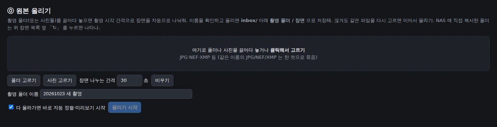
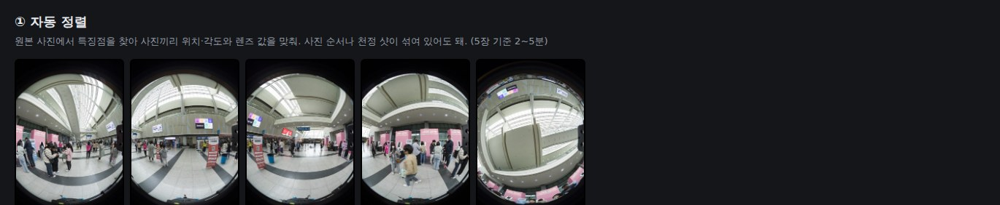
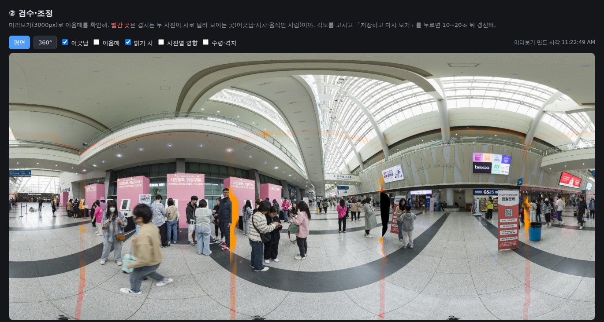
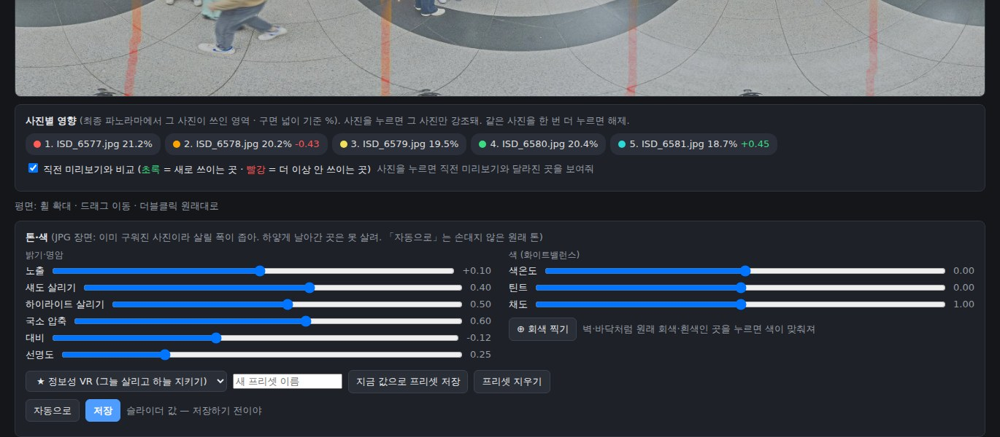
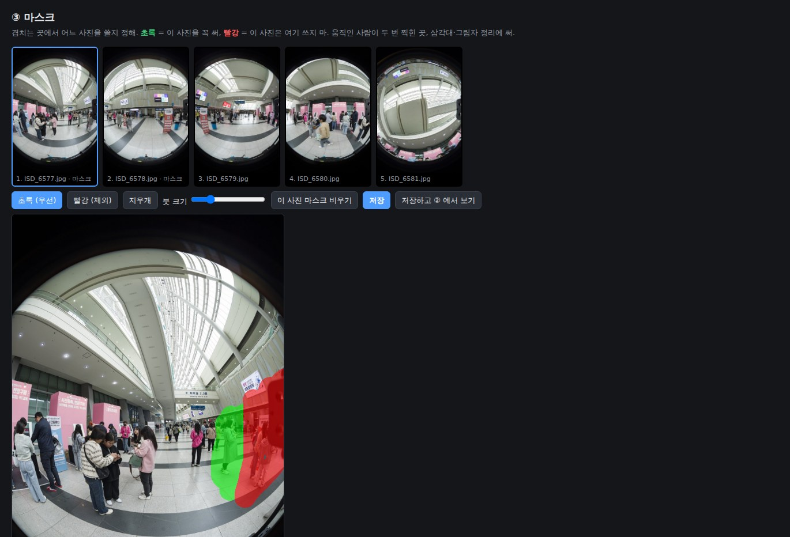
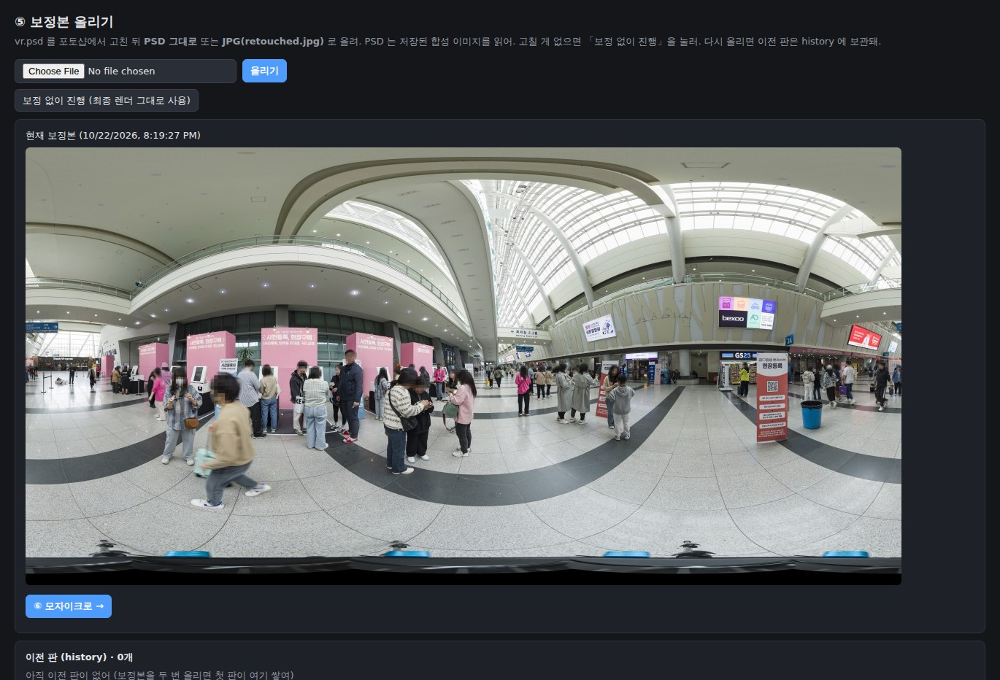
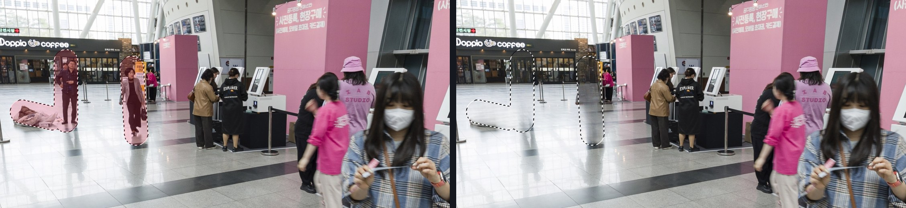
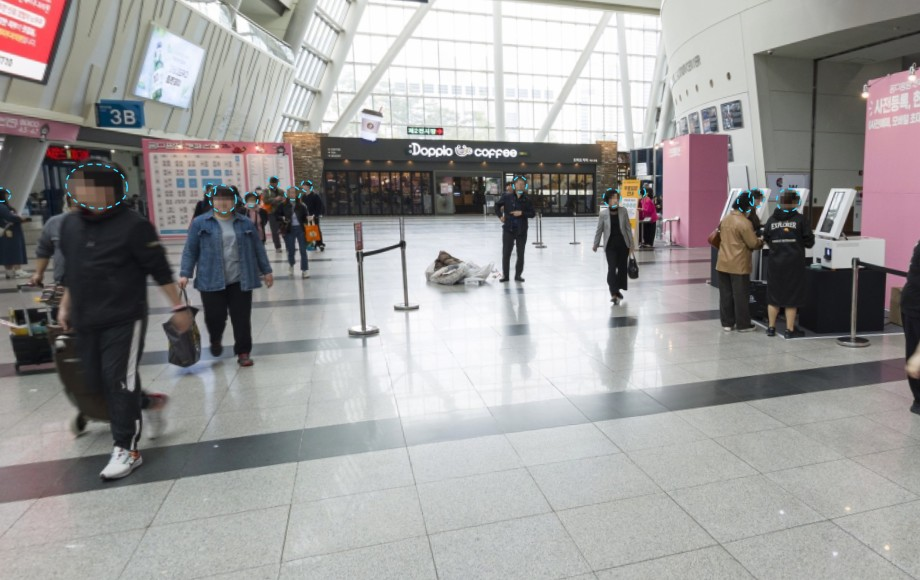
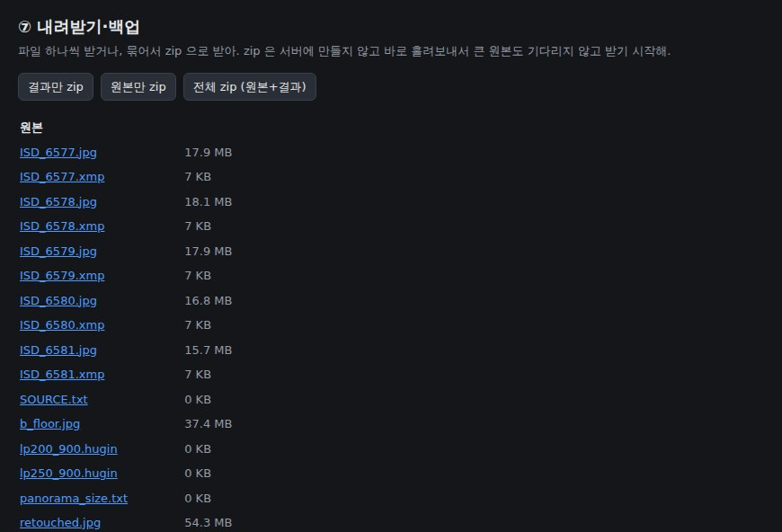

LOOK360 · 360 작업실
촬영 파일 정리부터 스티칭, 리터치·모자이크, 납품까지
한 웹 툴에서 진행하는 방법
2026-10-23 기준 · 「준비 중」 표시는 아직 만들고 있는 기능
전체 흐름
⓪ 원본 올리기
SD 카드 사진을 장면별로 나눠 NAS 에 저장
① 자동 정렬
사진 위치·렌즈 맞추기 (RAW 는 자동 현상)
② 검수·조정
이음매·밝기 확인, 각도·노출·톤 조정
③ 마스크
겹치는 곳에서 쓸 사진 고르기
④ 최종 렌더·PSD
12000px 합성 + vr.psd
⑤ 보정본 올리기
포토샵 수정 결과 반영 (없으면 건너뛰기)
⑥ 리터치·모자이크
사람·물건 지우기, 얼굴·번호판 가리기
⑦ 내려받기
결과·원본 zip → 타일 생성기
각 단계의 결과는 장면 폴더 안 .look360/ 에 남아서, 언제든 앞 단계로 돌아가 다시 할 수 있어.
시작하기
직원용 (밖에서도)
담당자가 알려주는 외부 주소로 접속
(지금은 임시 주소 · 구글 계정 로그인 준비 중)
관리자 전용
tailscale 주소는 관리자 기기에서만 열려. 직원은 외부 주소를 써
⓪ 원본 올리기
1
「폴더 고르기」 또는 끌어다 놓기. JPG·NEF·XMP 같은 이름은 한 컷
2
촬영 시각(EXIF)이 30초 넘게 벌어지면 새 장면 · 브라케팅은 자동으로 묶음
3
썸네일을 보고 나누기·합치기, 장소·장면 이름 적기
4
「올리기 시작」. 끊기면 같은 파일을 다시 고르면 이어서

폴더 구조
📁 VR/inbox/
📁 20241204 캣페스타/ ← 촬영 폴더
📁 2 티켓부스/ ← 장면
🖼 ISD_6577.NEF .jpg .xmp …
📁 .look360/ ← 작업 결과
📁 3 입구/
도구가 만드는 파일은 전부 .look360/ 안에만. NAS 를 통째로 백업하면 작업 상태도 같이 백업돼
NAS 에 장면 폴더를 바로 넣고 위쪽 「↻ 다시 찾기」를 누르면 장면 목록에 나타나
SD 카드 통째로 · 브라케팅
| 상황 | 작업실이 하는 일 |
|---|---|
| 장면 4~6장씩 촬영 | 사진의 촬영 시각(EXIF, 1/100초)으로 장면을 나눠 |
| 브라케팅 (노출 여러 장) | 「브라케팅 3장 × 방향 4개」로 묶고, 대표 노출만 장면에 · 나머지는 _브라케팅 폴더에 보관 |
| 장소 단계 폴더 | 촬영 폴더 / 장소 / 장면 3단계 (장소는 비워도 돼) |
| NAS 에 덤프한 SD 폴더 | 「NAS 에 이미 복사한 폴더 정리」로 NAS 안에서 바로 장면 폴더로 옮겨 |
| 장면 수십 개 한꺼번에 | 준비 중 · 밤사이 일괄 스티칭 → 아침에 검수 |
브라케팅을 합쳐 밝은 곳·어두운 곳을 함께 살리는 기능은 촬영 샘플을 받아서 만들 예정이야.
① 자동 정렬
순서가 섞이거나 천정 샷이 있어도 돼. 장면당 수십 초~몇 분
보라색 RAW 배지. 올리자마자 자동 현상, 「현상」에서 RAW / JPG 선택
미리보기를 만들고 ② 검수로. 막히면 pts 내보내기로 PTGui

② 검수·조정

빨강 · 어긋남
겹치는 두 사진이 서로 다른 곳 (시차·움직인 사람)
주황 · 밝기 차
이음매 양쪽 밝기 차이. ±0.15스톱 넘으면 표에서 강조
각도·노출 표
yaw·pitch·roll 0.05° 씩, 노출(EV) 0.05스톱 씩
저장하고 다시 보기
몇 초 뒤 갱신, 바뀐 곳은 하늘색으로 깜빡
② 톤·색

RAW 는 살릴 폭이 넓고, JPG 는 좁아 (날아간 곳은 못 살려). 내 프리셋은 모든 장면에서 같이 써.
③ 마스크

초록 = 꼭 써 · 이 사진의 이 부분을 우선으로
빨강 = 쓰지 마 · 움직인 사람, 삼각대, 그림자가 찍힌 쪽
저장 · ② 미리보기가 몇 초 만에 다시 만들어져
한 장만 찍힌 곳은 마스크로 못 고쳐
4장 촬영이면 사람 높이의 약 30% 가 한 장뿐 → ⑥ 리터치로
④ 최종 렌더·PSD → ⑤ 보정본 올리기
④ 최종 렌더 (3~5분)
stitched.jpg + vr.psd. 바닥 패치(b_floor)가 있으면 천저도 채워
포토샵
사진 레이어 마스크를 흰색으로 칠하면 그 사진이 드러나 (PTGui 와 같은 방식)
⑤ 보정본 올리기
PSD 그대로 또는 JPG. 고칠 게 없으면 「보정 없이 진행」. 이전 판은 history 에 남아

⑥ 🩹 리터치

칠하고 누르면 1초 안쪽. 바닥·벽 앞 사람에 강해
복사 → 앱에 Ctrl+V + 문구 → 결과를 편집 창에 Ctrl+V
펴진 사진을 받아 고친 뒤 끌어다 놓기
순서: 고칠 곳을 화면 가운데 크게 → 「🩹 이 화면 리터치」 → 그림자·반사까지 칠하기 → 비교 후 「✓ 적용」(레이어 저장, 끄기·지우기 가능)
⑥ 모자이크

1 「자동 찾기」: 머리(뒤통수 포함)·번호판. 고공·대형 홀은 「정밀」
2 마침표(.)·쉼표(,) 키로 하늘색 후보를 하나씩 넘겨 보며 틀린 건 지우기
3 빠진 건 사각·타원·자유곡선으로 직접. 「다음 시점」으로 빠짐없이 훑기
4 「✔ 검수 완료」 → 「원본 해상도로 저장」 = _mosaic.jpg
원본은 안 바뀌어. 보정본 없이 모자이크만 할 땐 메뉴 맨 아래 「모자이크만 하기 ↗」
⑦ 내려받기 → 타일

파일 하나씩
retouched·_mosaic·vr.psd 를 표에서 바로
zip 3종
결과만 / 원본만 / 전체. 바로 흘려보내서 큰 묶음도 즉시 시작
🧰 현장 도구 (메뉴 맨 아래)
look360 utils 기능을 웹으로: 폴더 생성·gps.txt·납품 복사·XML·pano 복사, 그리고 서버에서 타일 생성
촬영 팁
방향마다 2장씩, 몇 초 간격. 사람이 비켜난 쪽을 마스크로 골라 진짜 배경으로 지워져
60° 간격이면 거의 모든 곳이 두 장 이상에 찍혀서 마스크만으로 정리돼
RAW 로 찍고, 아주 밝으면 브라케팅. 날아간 하늘은 한 장으로는 못 살려
천정·바닥 샷(b_floor)이 있으면 같이 올려. 정렬과 천저 채우기에 써.
문제 해결
| 상황 | 할 일 |
|---|---|
| 장면이 목록에 없어 | 위쪽 「↻ 다시 찾기」 (사진 3장 이상 든 폴더만 장면) |
| 미리보기가 안 바뀐 것 같아 | 위쪽 막대의 진행·남은 시간 확인. 끝나면 자동으로 바뀌어 |
| 🔒 다른 사람이 작업 중 | 그 사람과 확인 후 「그래도 진행」 |
| 이음매가 크게 어긋나 | ② 각도 조정 → 안 되면 pts 내보내기로 PTGui 에서 |
| 리터치 결과가 어색해 | 「결과 버리기」 → 더 넓게 칠하거나 ChatGPT 로 |
| 외부 주소가 안 열려 | PC 재부팅 뒤 주소가 바뀌었을 수 있어 → 담당자에게 |